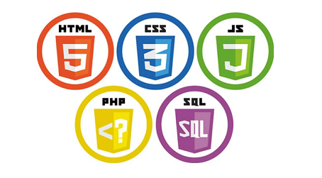
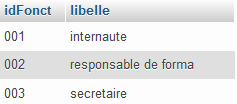
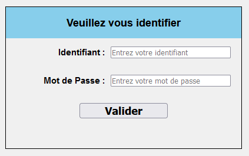
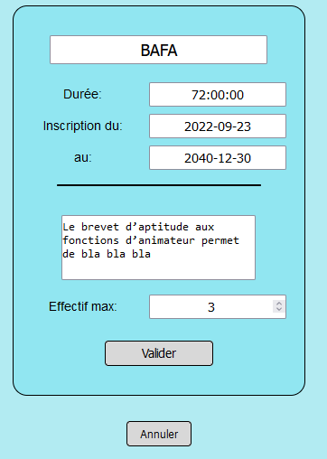

Site PHP Dynamique

La Maison des Ligues de Lorraine dispose d’un site statique destiné à informer les internautes, mais elle souhaite le compléter avec différentes fonctionnalités.


La Maison des Ligues de Lorraine dispose d’un site statique destiné à informer les internautes, mais elle souhaite le compléter avec différentes fonctionnalités.
Dans ce projet, il y a différents type d'utilisateur : intervenant, secrétaire, responsable de formation.
Les niveaux d'habilitation de ces rôles sont différents. Avant de pouvoir afficher leurs fonctionnalités, il faut donc savoir quel type d'utilisateur est présent. C'est pourquoi nous avons mis en place un système de connexion.
Chaque personne dispose d'un compte avec son rôle. En arrivant sur le site, l'utilisateur doit se connecter avec son identifiant et son mot de passe, ce qui lui permet d'accéder uniquement à ce à quoi il est autorisé.
Dans ce projet il nous a été demandé de modifier un site statique pour lui ajouter certaine fonctionnalitées. Ces fonctionnalitées ont requis la création et l'utilisation d'une base de données qui va être exploiter par le site web. Cette base de donnée va contenir des informations de l'organisation qui vont ensuite être exploiter par le site web. Par exmple lorsqu'on ajoute une formation :
Cette formation va être ajouter à la base de donnée et le site va désormé l'afficher.